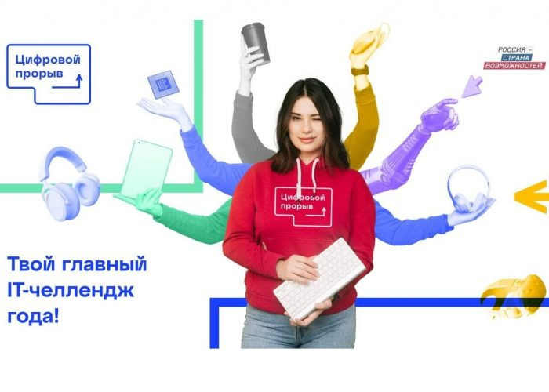

В Курске пройдет второй этап Всероссийского хакатона «Цифровой прорыв-2021» по
направлению EnergoMach
В Курске пройдет второй этап Всероссийского хакатона «Цифровой прорыв-2021» по
направлению EnergoMach

C 21 по 23 мая в Курске, на базе «Точка кипения» ЮЗГУ по адресу г. Курск, ул. Челюскинцев, 19, (учебный корпус №2, первый этаж) пройдет второй этап Всероссийского хакатона «Цифровой прорыв-2021» по направлению «Умные города, промышленность, ТЭК».
В 2021 году Конкурс «Цифровой прорыв» открыл сеть офлайн-площадок в регионах — IT-хабы, среди которых площадка курского IT-хаба на базе «Точки кипения ЮЗГУ».
Хакатон «Цифровой прорыв» пройдет в гибридном формате, офлайн и онлайн, на площадке курского IT- хаба соберутся команды разработчиков, в количестве 40 человек, остальные примут участие в режиме онлайн. В качестве основной тематики хакатона выбрана энергетическая и промышленная сферы как самые нуждающиеся в прорывных it-решениях.
Хакатон стартует 21 мая в 17.00 с торжественного открытия и предоставления участникам кейсов для решения от крупнейших компаний и организаций страны, среди которых Минэнерго России, РОСАТОМ и Аэропорт «Шереметьево». В течение 48 часов непрерывной работы на площадке команды участников будут работать над решением кейсов и в результате должны разработать цифровой продукт.
По истечении двух суток, 23 мая с 12.00 до 16.00 будут проходить потоковые защиты, на которых команды презентуют свои решения перед экспертным жюри. Подведение итогов и церемония награждения победителей состоится 23 мая с 16.00 до 18.00 в «Точке кипения» ЮЗГУ.
В курском IT-хабе участники будут обеспечены бесперебойным интернетом, круглосуточным доступом к инфраструктуре. Участники получат возможность показать свои знания, навыки и опыт работы в IT сфере. Победители хакатона получат возможность реализовать свое цифровое решение в одной из компаний или организаций из сферы энергетики и машиностроения России.
Когда человек включает телевизор, он не задумывается о том, какими сложными
космическими путями к нему прилетает телесигнал. Но это и хорошо: значит,
все процессы работают без сбоев. Покорение космоса открыло двери для
космического развития телевидения в его прямом смысле — передачи изображения
на дальние расстояния.
Когда человек включает телевизор, он не задумывается о том, какими сложными
космическими путями к нему прилетает телесигнал. Но это и хорошо: значит,
все процессы работают без сбоев. Покорение космоса открыло двери для
космического развития телевидения в его прямом смысле — передачи изображения
на дальние расстояния.